1. В электрическом поле, вектор напряженности которого направлен вертикально вверх, неподвижно «висит» песчинка, заряд которой равен 2*10-11 Кл. Масса песчинки равна 10-6 кг. Чему равен модуль вектора напряженности электрического поля? Ответ выразите в кВ/м.

2. Шарик массой 0,2 г, подвешенный на нити, находится в горизонтальном электрическом поле с напряженностью 8 кН/Кл. Какой угол образует нить с вертикалью, если заряд шарика 50 нКл?


3. Какую работу совершает поле при перемещении заряда 2 нКл из точки с потенциалом 200 В в точку с потенциалом 50 В?

4. Заряд -20 нКл переместили в однородном электрическом поле с напряженностью 10 кВ/м на 5 см в направлении силовой линии. Какую работу совершило поле? На сколько изменилась потенциальная энергия заряда?
\
5. Чему равна напряженность электростатического поля точечного заряда 40 нКл на расстоянии 8 см от заряда? k=9·109 Н·м2/Кл2. С какой силой будут взаимодействовать заряды, если на расстоянии 8 см поместить второй точечный заряд 5 нКл?

2 F = 56250 * 5 * 10^-9 = 0,003H
6. При движении в электрическом поле скорость электрона увеличилась с 1000 км/с до 5000 км/с. Чему равно изменение кинетической энергии электрона, если масса электрона равна 9,1•10-31 кг. Какую разность потенциалов прошел электрон?

7. Горизонтальный проводник массой m = 20 г подвешен за концы на двух проводах. Средняя часть проводника длиной l = 50 см находится в вертикальном однородном магнитном поле с индукцией 0,1 Тл. Чему равна сила Ампера, действующая на проводник если по проводнику протекает ток I = 2 А? На какой угол α от вертикали отклоняются провода?

8. Медный проводник расположен между полюсами постоянного магнита перпендикулярно линиям индукции магнитного поля. Определите площадь поперечного сечения проводника, если сила Ампера, действующая на него, равна 5 Н, модуль вектора магнитной индукции магнитного поля 10 мТл, а напряжение, приложенное к концам проводника, 8,5 В. Удельное сопротивление меди = 1,7.10-2 Oм.мм2/м.

9. Электрон движется в вакууме со скоростью 3.106 м/с в однородном магнитном поле индукцией O,1 Тл. Чему равна сила, действующая на электрон и радиус окружности, по которой движется электрон. Если угол между направлениями скорости электрона и линиями магнитной индукции равен 900, заряд электрона равен q=1,6.10-19 Кл, масса электрона 9,1.10-31 кг.


10. В однородное магнитное поле индукцией 10 мТл перпендикулярно линиям индукции влетает электрон (заряд электрона равен q=1,6.10-19 Кл, масса электрона 9,1.10-31 кг) с кинетической энергией Дж. Чему равна скорость электрона? Каков радиус кривизны траектории движения электрона в поле?


6. Плоский конденсатор подключили к источнику постоянного напряжения. Как изменятся заряд конденсатора, разность потенциалов между обкладками и напряженность поля внутри конденсатора, если расстояние между обкладками увеличить в 2 раза: а) не отключая от источника напряжения; б) предварительно отключив источник?


7. Найдите силу тока на R2 и напряжение на R4 в цепи, изображённой на рисунке, если амперметр показывает 2 А. R1= 2 Ом, R2 = 10 Ом, R3 = 15 Ом, R4 = 4 Ом.

 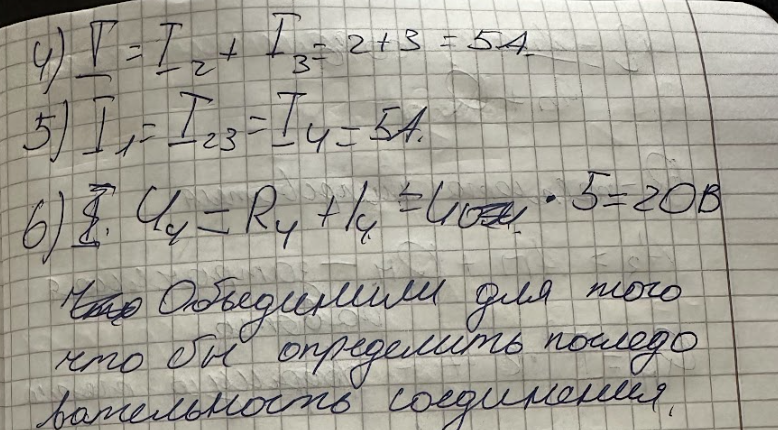
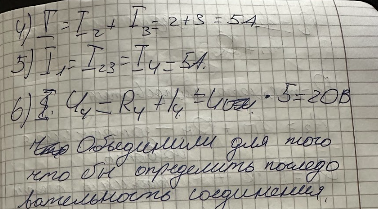
8. Электромотор с сопротивлением обмотки 7 Ом потребляет ток силой 2 А и имеет при этом КПД 96%. Какую механическую работу совершает мотор за время 3 с?
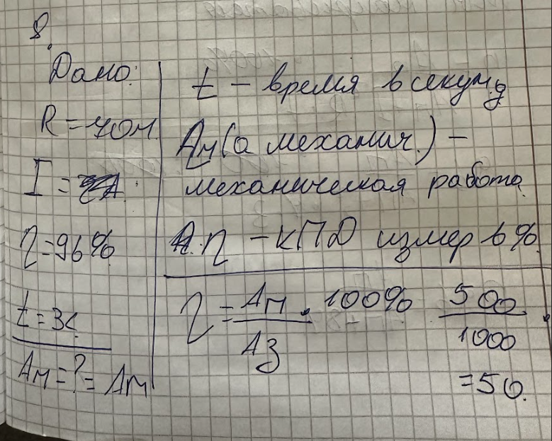 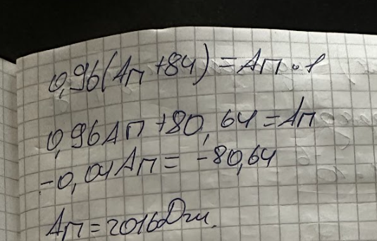
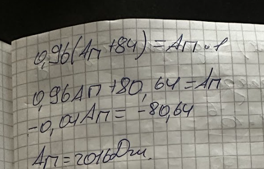
9. Через проводник длиной 12 м и сечением 0,1 мм2, находящийся под напряжением 220 В, протекает ток 4 А. Определите удельное сопротивление проводника. Какое количество теплоты выделится в проводнике за 1 час
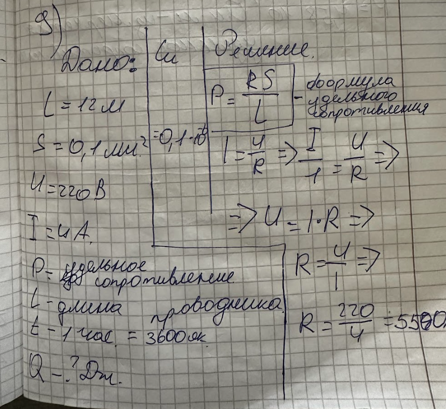 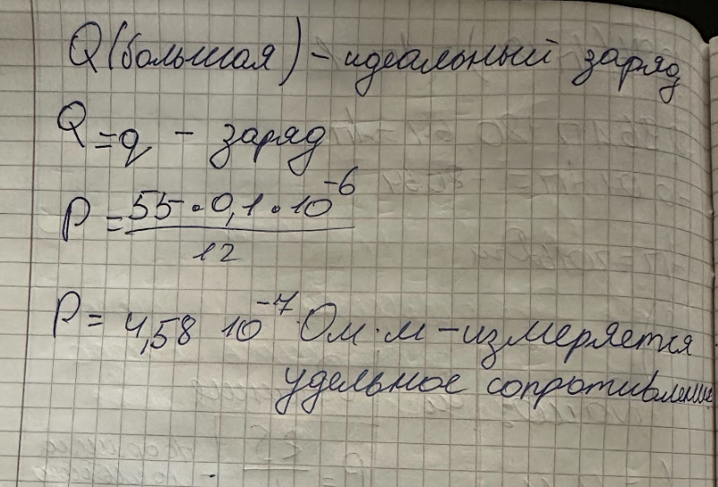10. Автомобильную Лампу, рассчитанную на напряжение 12 В и силу тока 8 А, нужно включить в сеть с напряжением 172 В. Какое добавочное сопротивление и как нужно подключить к лампе?
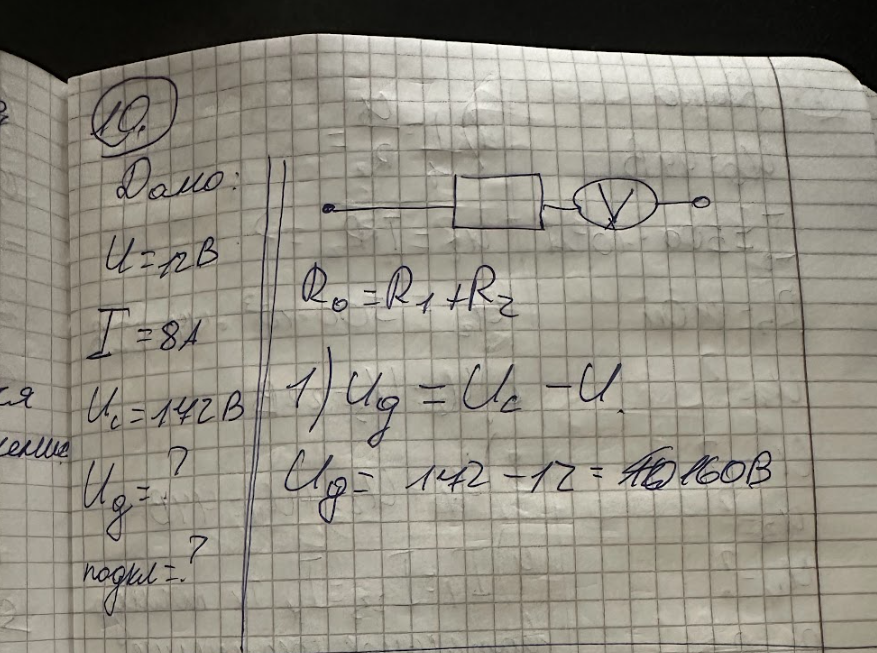R=Ur/I = 160/8A = 20Om
11. На концах участка цепи, изображенного на рисунке, напряжение 44 В. Амперметр показывает 500 мА. Найдите напряжение на каждом из резисторов, если R1 = R4, а R2 = 44 Ом.
 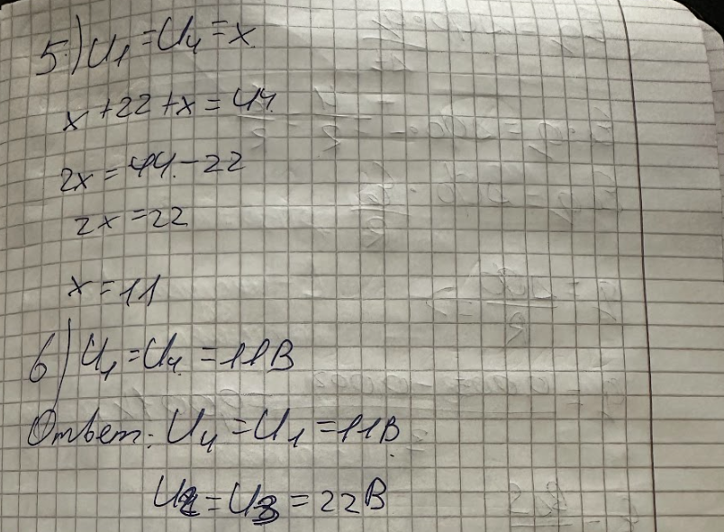
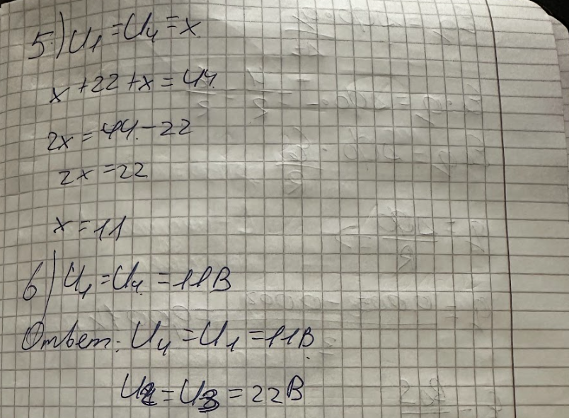
1. Замкнутый проводник сопротивлением R = 3 Ом находится в магнитном поле. В результате изменения этого поля магнитный поток, пронизывающий контур, возрос с Ф1= 0,002 В6 до Ф2= 0,005 Вб. Какой заряд прошел через поперечное сечение проводника?
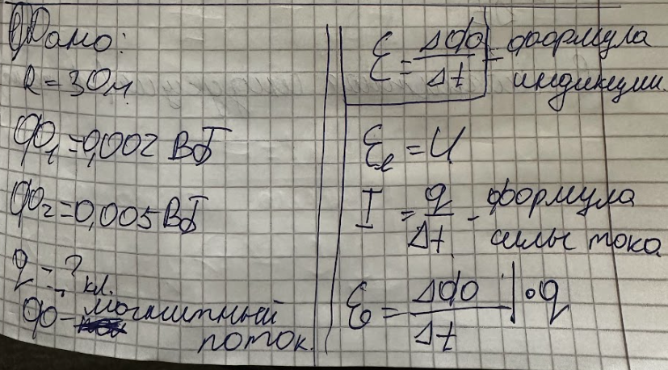
2. По параллельным проводникам Ьс и ad, находящимся в магнитном поле с индукцией В= 0,4 Тл, скользит проводящий стержень MN, который находится в контакте с проводниками (см. рисунок). Расстояние между проводниками l = 20 см. Слева проводники замкнуты резистором с сопротивлением R = 2 Ом. Сопротивление стержня и проводников пренебрежимо мало. При движении стержня через резистор R протекает ток I = 40 мА. С какой скоростью движется проводник? Считать, что вектор В перпендикулярен плоскости рисунка.

4. Колебательный контур состоит из конденсатора емкостью С = 400 пФ и катушки индуктивностью L = 10 мГн. Чему равно максимальное значение энергии электрического поля, если амплитуда колебаний напряжения Uм =500 В? Найти амплитуду колебаний силы тока Ім, если колебательный контур считать идеальным.


5. На рисунке приведен график зависимости силы тока от времени в колебательном контуре, состоящем из последовательно соединенных конденсатора и катушки, индуктивность которой равна 0,2 Гн. Определите максимальное значение энергии магнитного поля катушки.
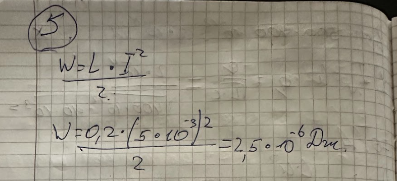7. Емкость конденсатора колебательного контура 1,6 мкФ, частота свободных колебаний 2,5 кГц, амплитудное значение заряда конденсатора 4 мкКл достигается при t =0. Найдите индуктивность катушки и амплитудные значения силы тока.
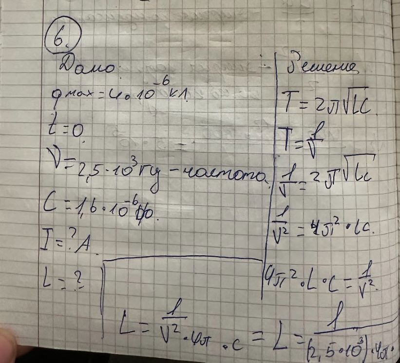 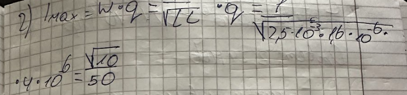6. Трансформатор, содержащий в первичной обмотке 840 витков, повышает напряжение с 220 до 550 В. Каков коэффициент трансформации? Сколько витков во вторичной обмотке? В какой обмотке провод имеет большую площадь поперечного сечения?
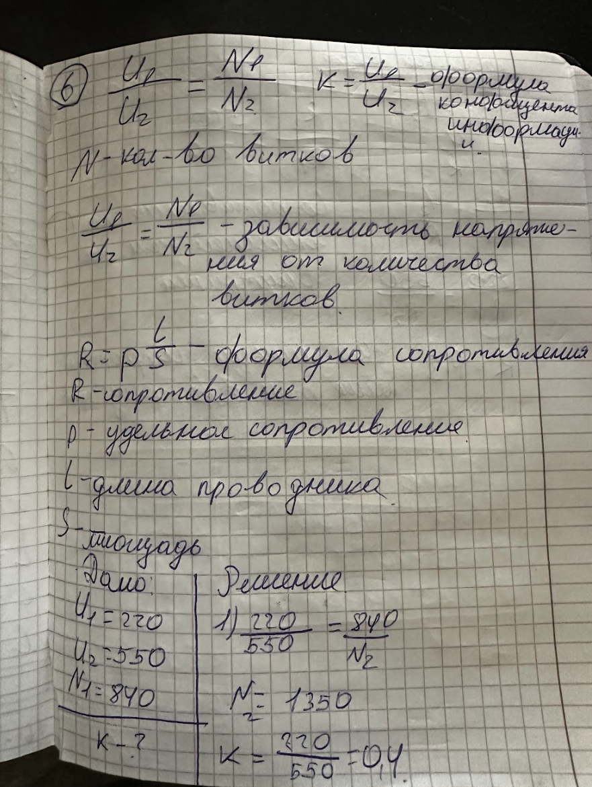 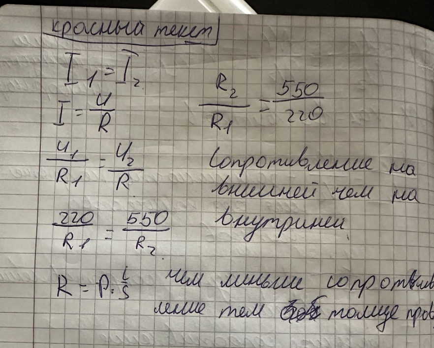8. Дорожная служба для связи с патрульными машинами использует радиоволны с длиной волны 24 м. Какова емкость входного контура радиоприемников патрульных машин, если индуктивность входного контура равна 50 мкГн?
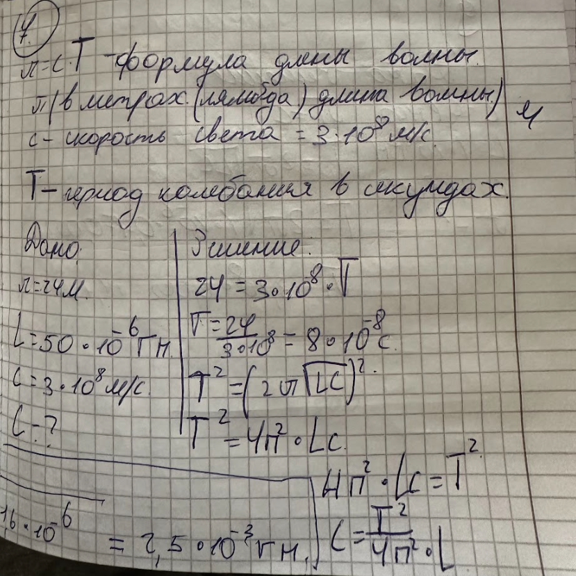 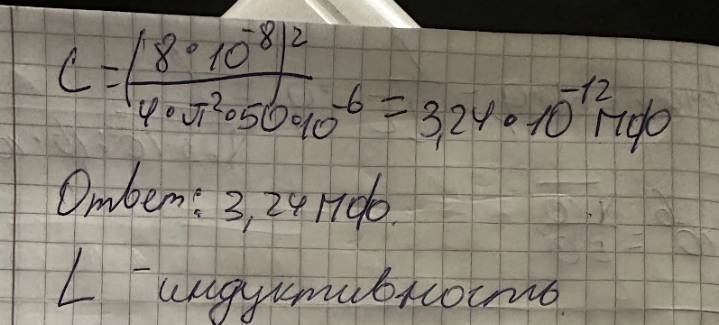9. Колебательный контур радиопередатчика содержит конденсатор емкости 0,1 нФ и катушку индуктивности 1 мкГн. На какой длине волны работает радиопередатчик? Скорость распространения электромагнитных волн с = 3.108 м/с.
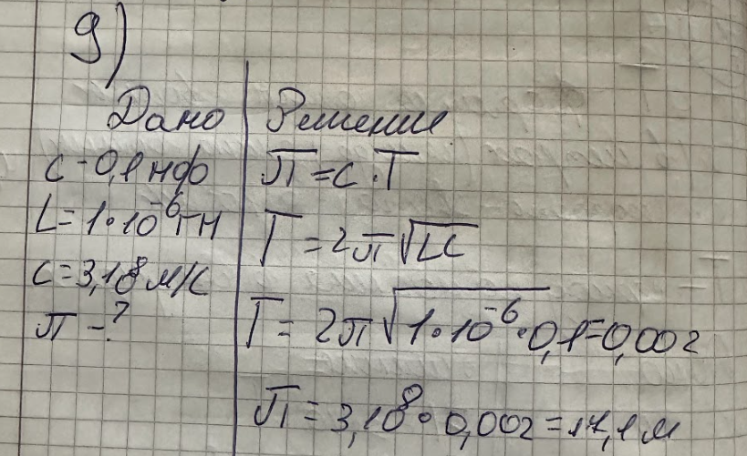1. При какой минимальной энергии квантов произойдет фотоэффект на цинковой пластине?
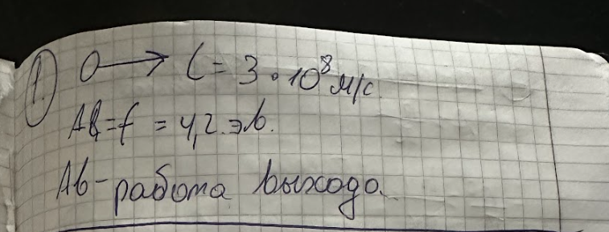2. При облучении алюминиевой пластины фотоэффект начинается при наименьшей частоте 1,03 ПГц. Найти работу выхода электронов из алюминия (в эВ).
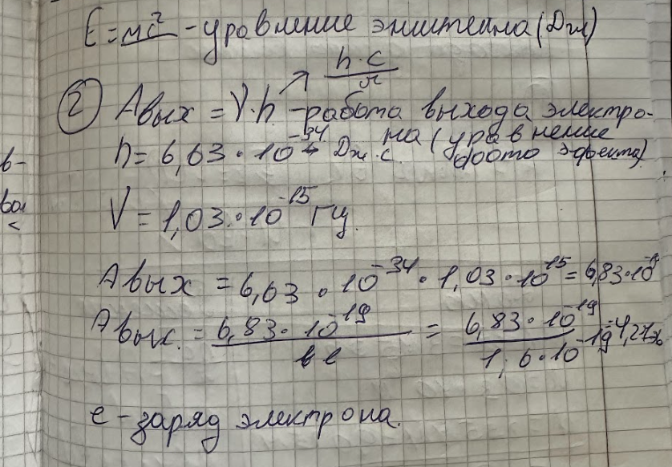3. Какую максимальную кинетическую энергию имеют фотоэлектроны при облучении железа светом с длиной волны 200 нм? Красная граница фотоэффекта для железа 288 нм.
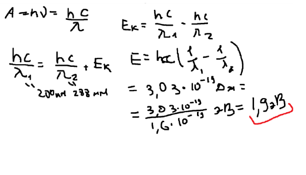4. На плоскую цинковую пластинку (Авых = 3,75 эВ) падает электромагнитное излучение с длиной волны 0,3 мкм. Какова напряжённость задерживающего однородного электрического поля, вектор напряжённости которого перпендикулярен пластине, если фотоэлектрон может удалиться от поверхности пластинки на максимальное расстояние d = 2,5 мм?
 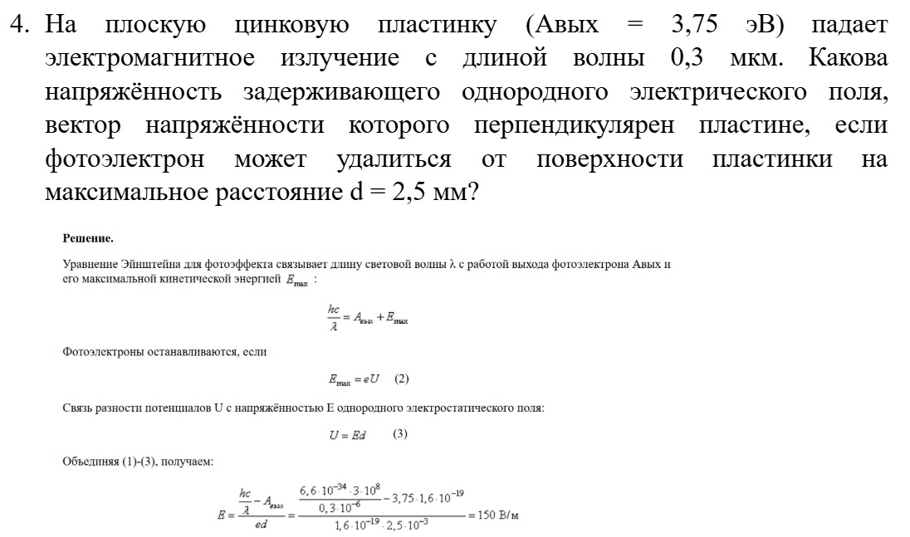
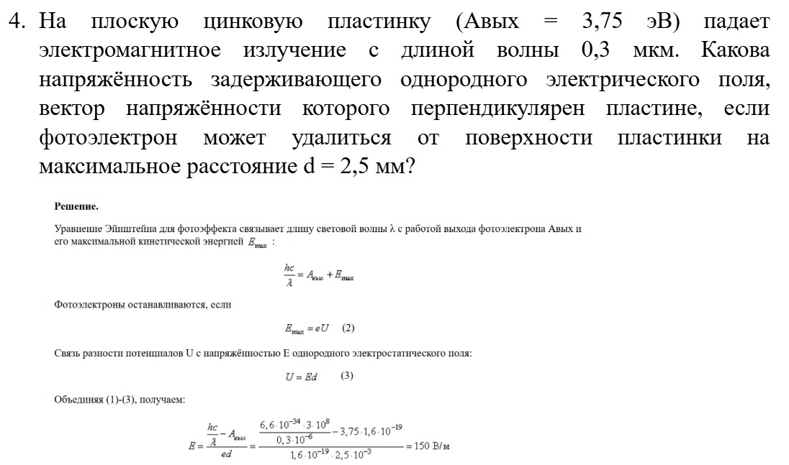
5. Определить длину волны излучения, фотоны которого имеют такую же энергию, что и электрон, ускоренный напряжением 4 В.
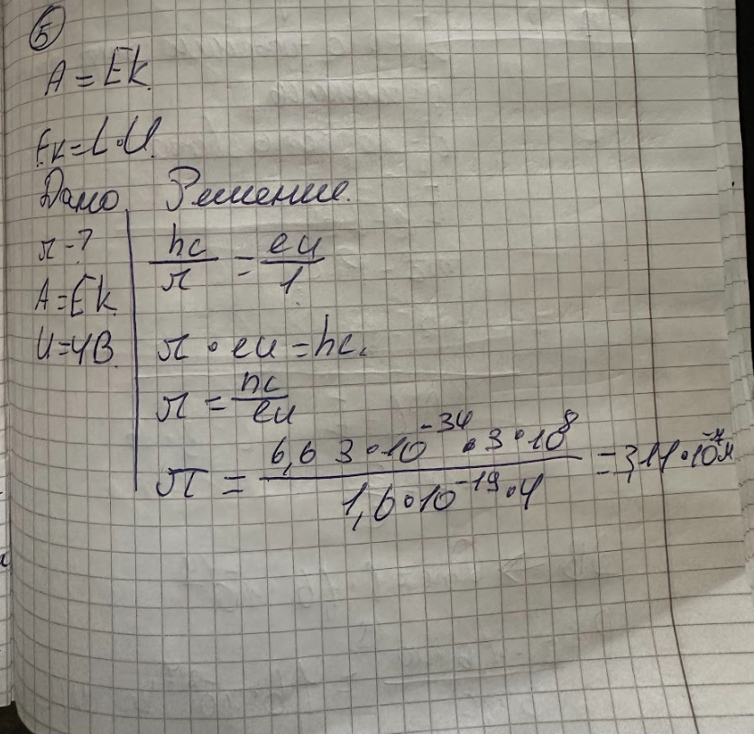310
6. Каков импульс фотона, энергия которого равна 3 эВ?
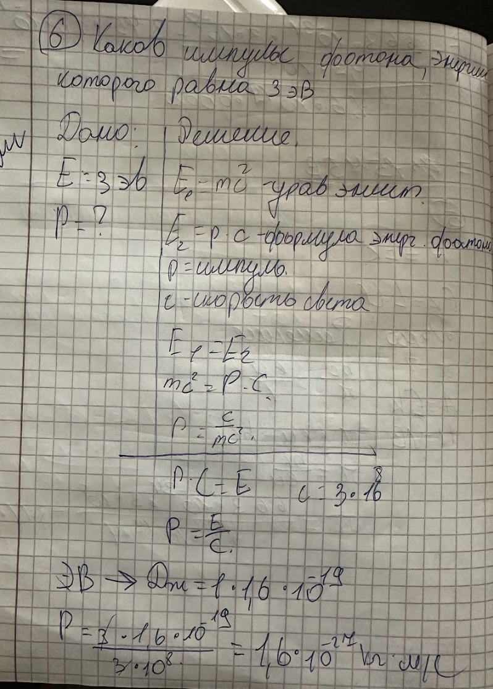7. Измеренное при фотоэффекте значение задерживающего напряжения равно 2,4 В. Найдите длину волны падающего на поверхность излучения, если работа выхода электронов из металла равна 2,4 · 10-19 Дж.
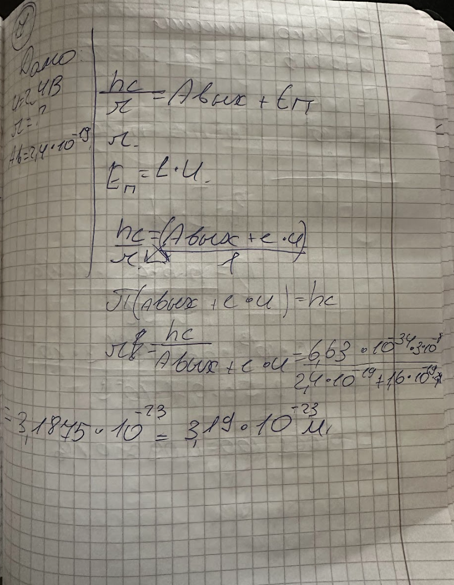8. Рентгеновская трубка, работающая под напряжением 50 кВ при силе тока 2 мА, излучает 5 • 1013 фотонов в секунду. Считая среднюю длину волны излучения равной 0,1 нм, найти КПД трубки.
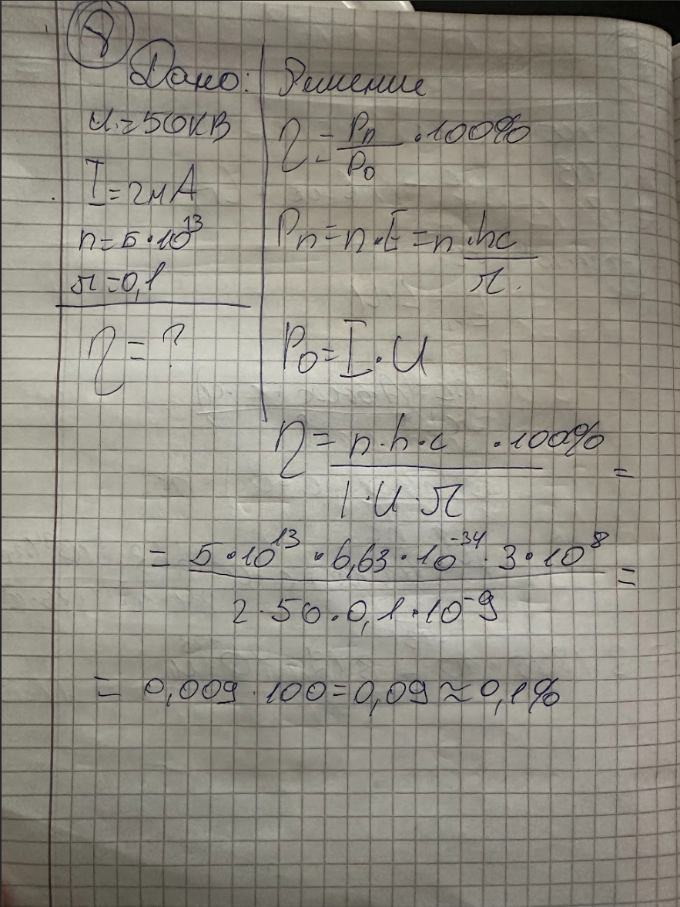